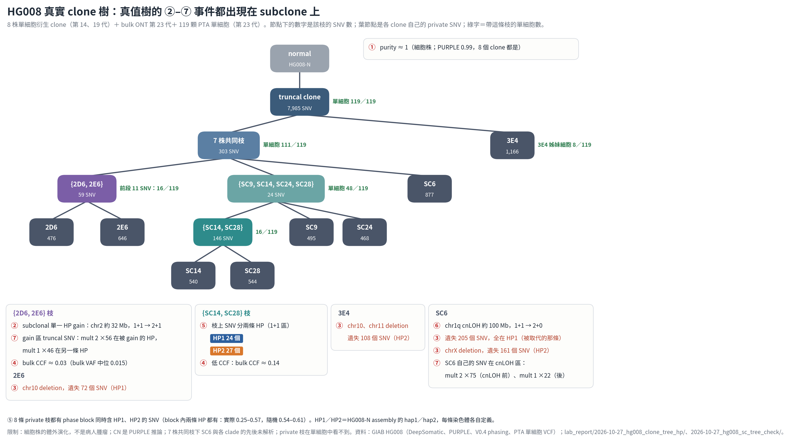

longbulksim 的壓力測試真值樹假設 subclone 由「分到 HP1／HP2 的 SNV」加上 copy number 事件形成。10-25 的 HG008 分析只看到 truncal SNV，回答不了 subclone 這一層。這些事件在真實的 clone 樹上存在嗎？這棵樹本身又有沒有單細胞證據？

這證明真值樹的事件在真實的 clone 演化中會發生，而且 long read 能把它們對到 HP1／HP2。能當「單細胞證據樹」的是 truncal → {SC9, SC14, SC24, SC28} → {SC14, SC28} 與 3E4 那一支。chr10 同一段兩群細胞失去不同的 haplotype（mirrored LOH），只看 copy number 分不出來，是「HP 才看得到的事件」的真實例子。
這是細胞株在培養中的演化，不是病人腫瘤，事件頻率仍要看 TRACERx 統計。CN 來自 PURPLE 推論。單細胞 VCF 只有 PASS 呼叫，沒呼叫到不等於沒有；要確認得看 CRAM（4.8 TB，沒下載）。chr10 只用 germline het 數量判斷，分不出 deletion 和 cnLOH。branch_bulk_hp.tsv 與部分分群分析在對話中執行，沒存成腳本。
資料：/big8_disk/boyu114/benchmark_data/GIAB/HG008/（8 clones HiFi-somatic v0.9.4、bulk_ONT_T_p23、smvar_V0.4、single_cell_vcf 119 顆）。 session 1f5138cf 13:37–14:41（clone 樹與事件）、649c955a 15:41–16:37（單細胞檢查、clone 定相）。 單細胞檢查 8 process 約 1.3 分鐘；bulk HP 23 process 約 1.5 分鐘。
tools/hg008_clone_tree.pytools/hg008_clone_events.pytools/hg008_bulk_hp.pytools/draw_hg008_clone_tree.pytools/hg008_sc_tree_check.pytools/hg008_clone_hp_orient.pypython3 -I tools/hg008_clone_events.py $H $Lpython3 tools/hg008_bulk_hp.py $H/bulk_ONT_T_p23/*.bam <full_tumornormal.vcf.gz> $L 23python3 -I tools/hg008_sc_tree_check.py <snv_patterns.tsv> $H/single_cell_vcf/vcf <out> 8lab_report/2026-10-27_hg008_clone_tree_hp/lab_report/2026-10-27_hg008_sc_tree_check/10-28 簡報原本 7 頁，只講 CONIPHER 怎麼產生模擬資料。要接到「long read 版的模擬器怎麼做、它的事件有沒有真實根據」。
report_rule.md 新增或修改 S-1、S-2、S-11（講稿只講畫面上有的）與 L-10 子條。簡報的故事線變成「CONIPHER 怎麼做 → long read 版改哪幾步 → 新加的事件在真實資料裡有根據」。HG008 頁從主角降為佐證。
架構圖上 longbulksim 定參數寫「範圍內隨機值」，但程式目前還是固定值，講稿有註明。發布後的講稿列出幾處頁面之間數字對不上，還沒修。本地 report/ 與線上版要再確認一致。
session 1f5138cf 13:05–14:07、649c955a 15:06–19:06、0453610a 19:52–21:20、6385ac26 21:44–21:50。每次修改都記在 BRIEF.md 的 2026-10-27 各節。
report/2026_10_28_slides/project/slides/s2-architecture.htmlreport/2026_10_28_slides/project/slides/s2-hg008-data.htmlreport/2026_10_28_slides/project/slides/s2-hp-split.htmlreport/2026_10_28_slides/project/slides/s2-hp-gain.htmlreport/2026_10_28_slides/BRIEF.mdreport/report_rule.mdpython3 tools/check_slides.py report/2026_10_28_slides/ --titleshttps://claude.ai/artifact/VD3N6zKfSawc7HCgoUZx6q（version 152）要比較多種 prior 與 pair score，Python PhyClone 太慢。10-26 完成移植的 M0–M5。今天要補完後處理、outlier 與 loss prior，並證明 Rust 版在論文 benchmark 上沒有變差、到底快多少。
compute_log_S，Rust 每次重算；加了 cache 後 grid 1000 從 1.6× 到 8.2×。cargo test 118 pass。移植計畫 M0–M9 全部完成。Rust 版可以直接拿來跑 FSCRP_PRIOR_PLAN.md §4 的 prior 實驗，以前一組 43–61 分鐘的實驗現在幾分鐘可完成。和原版唯一的模型差異是 PG 子樹重新加權修正，預設不會用到。
§4 prior 實驗還沒開始，判定門檻要老闆同意。V5 每格只跑 3 次（清單要求 5 次）。FS-CRP 只快約 5×，因為 Python 那段本來就是 numpy 編譯過的運算。Pitman–Yor 在 K = 1 時 alpha 仍會堆到下限。M9 的效能修正沒有另外送審查。
haploclone branch rust-port 合併 perf-m9b → 7e1daeb；main_work commits aba7b2f..db5d044。session 3cd9cf3c。
phyclone_rs/PORTING.mdphyclone_rs/decisions.tsvphyclone_rs/v3/run_rust.pyphyclone_rs/v4/run_v4.pyphyclone_rs/v5/bench.pyphyclone_rs/v5/check_identity.pytools/eval_phyclone_dataset.py~/venvs/phyclone/bin/python phyclone_rs/v4/run_v4.py run --impl rust --slots 14~/venvs/phyclone/bin/python phyclone_rs/v4/run_v4.py scorecargo test --releasephyclone_rs/v4/README.mdphyclone_rs/v5/README.mdphyclone_rs/v5/summary.tsvlab_report/2026-10-27_v4_evaluator//big8_disk/boyu114/phyclone_v4/對照 CONIPHER 與 longbulksim 的參數與建樹過程時，發現三處不合理：longbulksim 的 root 不是 normal；WGD 在每一段各自加倍、時間不同；spec 可以自己填 read 長度，但使用者不需要。
N），trunk clone 的 parent 寫 N；讀 truth_tree.tsv 的 tools 同時接受舊的 root。{wgd: true} 事件：重播到它時，所有段、所有 copy 一起加倍。各段 trunk 狀態拆成 WGD 前、後兩段，取事件最少的拆法。read_span 欄位改成報錯，read 長度固定用 HCC1395 t50_n00 分位數表。generate --wgd yes：trunk 200 個事件裡只有一個 WGD，在第 168 個。WGD 前的 truncal SNV 現在一律 2 份、之後 1 份，比例全基因體一致，符合真實 WGD 是一次性事件。CONIPHER 則是每個 SNV 各自隨機排先後。
改動還沒 commit。random_tree 模式的 WGD 沒改，仍是各段各自 gain。之前產生的模擬輸出（含今天畫的 sim_0001）都是舊做法，要用新做法得重新產生。舊輸出的 spec.yaml 寫 parent: null，不能再用 parse_spec 讀。
session 0453610a 19:10–21:37。DECISIONS.md 2026-10-27 三列。
longbulksim/longbulksim/model.pylongbulksim/longbulksim/param_tree.pylongbulksim/longbulksim/random_tree.pylongbulksim/longbulksim/simulate.pylongbulksim/DECISIONS.mdlongbulksim/README.mdtools/eval_hp_truth_phyclone.pycd longbulksim && python3 -m unittest discover -s testspython3 -m longbulksim.generate <out> --wgd yes用 pstack 的 reflect 看最近 20 個 session，什麼最拖慢 AI？
reflect 列出 13 條建議，使用者選 A1–A8 套用：daily-log 4 條（修腳本、補手動補跑步驟、無人值守限制、cron 權限），CLAUDE.md 4 條（PhyClone 指令、耗時運算前先說明、繁中規則範圍、「簡單說」先白話）。晚上依使用者要求把 CLAUDE.md 去重、精簡，並加入 phyclone_rs 與 INDEX 入口。
collect_day.sh 第 218 行中止，10-22 因此沒有日誌。已加 || true。這兩處是重複浪費工具呼叫的主因，修好後夜間 cron 與新 session 都不必再繞路。
A1 的修正只確認語法，要看今晚 cron 才知道是否修好。A9–A13（專案代號表、commit 規則、被 ignore 的 12 個實驗目錄與 15 支腳本要不要 git add -f）還沒決定。
session 78a0128e 12:34–13:00、6385ac26 21:41–21:43。reflect 原文在 session scratchpad 的 REFLECT_2026-10-27.md。
~/.claude/skills/daily-log/scripts/collect_day.sh~/.claude/skills/daily-log/SKILL.md~/.claude/skills/daily-log/RECOVERY.md~/.config/daily-log/cron_daily_log.shCLAUDE.md下午先用 8 株 clone 的 SNV 共享關係排出 clone 樹（lab_report/2026-10-27_hg008_clone_tree_hp）。接著用 119 顆 PTA 單細胞檢查，三處要改：(1)「只缺 2E6」的 82 個 SNV 有 71 個在 chr10，44 顆細胞缺全部 chr10 SNV 且該段 germline het 少 93%，所以不是分枝，是 chr10 LOH；另 24 顆在同一段失去另一條 haplotype（mirrored LOH），LOH 至少獨立發生兩次。(2)「只缺 3E4」的 411 個 SNV 是真的分枝：3E4 最早分出，有 8 顆姊妹細胞。(3) 8 條 private 枝沒有任何細胞帶超過一半，無法證實，推論是分離後培養中才產生。另外找到原樹沒畫出的 {SC9, SC14, SC24, SC28} clade（48／119）。clone_tree_hp/README §6 與樹圖已依此更新；2E6 卡片的「chr10 deletion 遺失 72 個」因使用者只要求補兩點，先沒改。
tools/hg008_sc_tree_check.pylab_report/2026-10-27_hg008_sc_tree_check/README.mdlab_report/2026-10-27_hg008_sc_tree_check/tables/chr10_germline_het.tsv使用者發現 longbulksim 可以輸入 read 長度，先要求禁止這個輸入，再要求刪掉所有跟 read 長度有關的特徵程式碼。agent 問刪除範圍時被中斷；使用者改問是否一定要 read 長度才能用 het_map、switch。回答：只有 het_map 本質上需要 read 長度，mistag、base error 不用，switch 可改用 SNV 位置。agent 建議不刪：pairs.tsv（同一 read 上 SNV 共現）是研究主軸之一，C4 會讀它，壓力測試樹只有 105 列，保留成本低。使用者沒再要求刪除，轉去改簡報。最後狀態：只有 spec 的 read_span 欄位被禁用，read 長度固定用 HCC1395 t50_n00 分位數表；pair 共現與 read 長度相關程式碼都保留。
longbulksim/longbulksim/sample.pylongbulksim/longbulksim/simulate.py10-26 23:00 跑 daily-log 寫 10-26 的日誌。collect_day.sh 在第 218 行（| head -100）中止，先把腳本複製到 /tmp/dl_scripts、在該行加 || true 繞過，再寫 candidates、JSON、驗證引文、渲染。完成後游標推進到 2026-10-26T23:05:00。這個 bug 隔天由 reflect 的 A1 正式修在 skill 裡。
daily/.data/2026-10-26.jsondaily/2026-10-26.htmlV5 結束時發現系統碟 / 已 100%，只剩 10 GB。查證 Claude 相關檔案約 12.6 GB，Rust build 目錄與 V4、V5 輸出都不在系統碟。使用者同意後刪掉過去 session 的 /tmp/claude-1024 暫存目錄（約 8.8 GB），並把 ~/.rustup、~/.cargo（約 1.56 GB）搬到 /bip8_disk/boyu114/，原位置留 symlink；之後 cargo build 確認可用。可用空間從 10 GB 增加到 20 GB，系統碟仍 99% 滿，剩下約 1 TB 不是這些工作產生的。